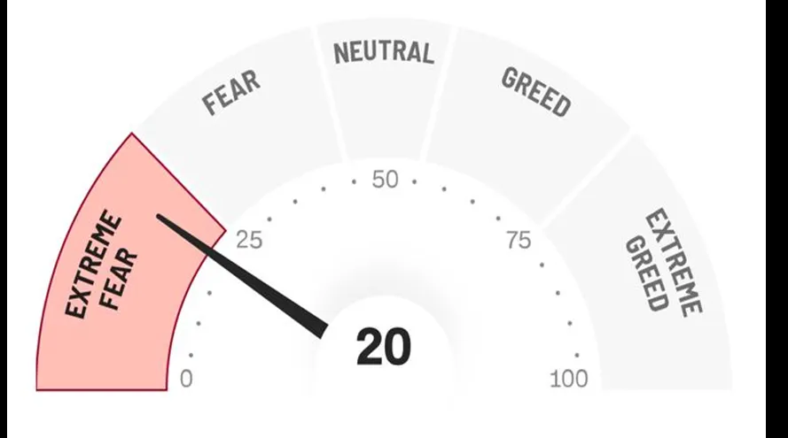
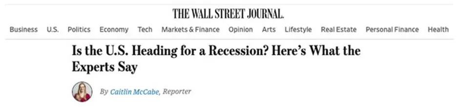
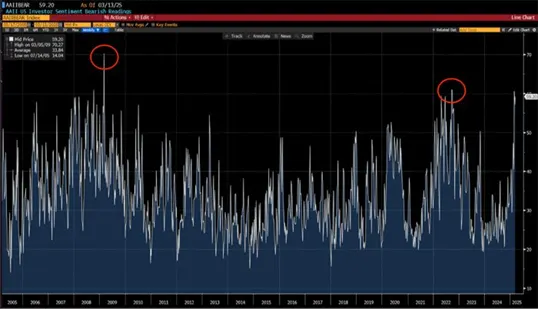

Crypto along with all financial markets has experienced a sharp and unexpected pullback this year. All the excitement surrounding the election of a staunchly pro-business and pro-Crypto US President has rapidly evaporated as potential trade wars, ongoing geopolitical tensions together with political coin launch debacles followed by the largest hack in Crypto history ($1.5bn by the North Koreans no less!) have raised fears and uncertainty about prospects.
Current conditions seem anything but hopeful. We have media outlets like CNBC, Bloomberg, and the Wall Street Journal running stories that a US recession is imminent. Investors have lost money and sentiment has now reached "extreme fear" levels — an exceptionally rare occurrence.
Today, I would like to explain why this extremely low level of investor confidence may counterintuitively signal that a recovery may happen sooner rather than later. In fact, given the slew of upcoming positive catalysts ahead, investors may well by the end of the year look back on this moment and claim it was as obvious as it gets!

One of the key reasons investors are reducing their risk appetite and staying sidelined is that there is now a real risk of recession in the US economy. JPMorgan Chase is raising their forecast of the risk of a recession this year to 40% — up from their prior forecast of 30%. And the fear and greed index at CNN is running at levels not seen since September 2020.
But here's the reality…
The last time we saw market sentiment at this level or worse, investors realised some of the biggest gains in the months that followed.
Below is a chart showing the American Association of Individual Investors Sentiment Survey. The survey is given to individual investors and asks their thoughts on where the market is heading in the next six months. They've been conducting it since 1987.

The survey is currently at around 60%, meaning six out of every ten investors are bearish on the market. And there have been only two other periods when sentiment was worse than what we see right now.
Those two periods were September 2022 and March 2009. Less than a year after both those periods, the S&P 500 index went up as much as 67% and 28%. And two years after the September 2022 date, the index was up 60%.
It's a testament to Baron Rothschild's cliché quote, "The time to buy is when there's blood in the streets." It's a metaphor that suggests the best time to buy is when the market is in a state of panic and fear. And that's what we have today… Extreme fear.
One reason this happens is that that markets are forward looking mechanisms, typically reflecting conditions 18 months ahead rather than the status quo. So we could see a scenario where, even though economic growth becomes dramatically weaker, measures taken by the authorities to address this — like aggressively cutting rates or boosting liquidity conditions more broadly — act as the catalyst that quickly boosts asset prices from these lower levels as markets anticipate improving conditions further out.
Another fun fact that most commentators don't highlight is that, in the most recent recovery since September 2022, Crypto massively outperformed traditional markets, with Bitcoin up nearly 300% over the same period the S&P went up 60%. The reality is although the sentiment towards Crypto aligns in the very short term with that towards all risk assets, the sector has its own strong growth prospects which means its price recovery has typically been far quicker and its investment returns far higher.
What's strange about the recent weakness in Crypto is that there's a monster catalyst ahead that isn't being covered by traditional media outlets.
The media has been relatively quiet about the most recent session in Congress. It was a mark-up session. This is where committees in Congress hash out specifics on certain bills, amend them, and decide what moves forward. It's when work gets done.
What makes this session so important is that it's the first one of the new 119th Congress. This means we get to find out the true priorities for the next year and the new administration. One of the most important recent developments is the bill, "Guiding and Establishing National Innovation for U.S. Stablecoins of 2025" or "GENIUS Act of 2025" is one of the top priorities of the year.
It's a bill that lays out a federal regulatory framework for payment with stablecoins. It lays out the definition of a stablecoin, discussing a licensing framework, and some protections such as reserve requirements, disclosures, and oversights.
This moment is monumental for the digital asset industry. For years the industry has been suppressed by regulators and lawmakers. It's why the industry has been eager for regulatory clarity so it can deliver compliant products and services to customers without fear.
Even Wall Street is champing at the bit.
BlackRock CEO Larry Fink was on camera pleading to the SEC to approve tokenisation while he attended the World Economic Forum. JPMorgan Chase CEO Jamie Dimon also was vocal at the same meeting about tokenisation, just as his companies prepare to launch their own blockchain-based foreign exchange solutions this year.
And then there was Bank of America CEO Brian Moynihan who, during an interview with David Rubenstein at the Economic Club of Washington, D.C., stated that once stablecoin legislation gets approved, his company will go into that business.
And here we are…
Bipartisan legislation is moving to the Senate floor for a vote. And on the House side, it's fully expected to move through with a Republican majority that is fiercely pro-Crypto…..
The US Administration has another very good reason to expedite stablecoin regulation as I explained in my previous piece on the subject: stablecoins are now the 13th largest buyer of US debt globally and the US needs to issue a mountain of paper right now. What better way to help boost the demand from one of the major buyers of this debt than by regulating stablecoins!
It can't be stated more clearly that this is a monumental shift. Overnight, this bill will act as a massive catalyst to the $220 billion stablecoin market that represents more than 8% of the entire market cap of Cryptocurrencies and c.50% of all blockchain network transactions.
It's why I and many other people in Crypto fully expect stablecoins to grow to trillions of dollars in the next few years. When this happens, the applications and blockchains that host these stablecoins are poised to realise a major boost to fees, funding, users, and undoubtedly therefore valuations.
But that's not all…
The GENIUS Act is just the beginning.
Congress is expected to break ground several more times in the coming weeks to months. For proof, we can look no further than the financial regulators themselves. The Securities and Exchange Commission (SEC) has been busy over the last few weeks dropping court cases against some of the most influential entities in the space. This includes the exchange Coinbase, wallet provider MetaMask, developer group Consensys, decentralized exchange creator Uniswap Labs, digital collection marketplace OpenSea, and many others.
Their dismissal is signalling that regulators are clearing the table for what is set to be the biggest piece of legislation of the year for digital assets, which is an all-encompassing digital asset framework bill.
It'll establish a clear framework for the industry on how digital assets can operate without fear of regulatory blowback. And it's not just the SEC court case dismissals…
Acting SEC Chair Mark Uyeda is erasing certain Crypto-specific language from a prior Exchange Act Rule that defined an exchange in a way that severely limits certain Cryptocurrency marketplaces. The removal ensures new frameworks won't hit any snags on pre-existing definitions.
Even the Office of the Comptroller of the Currency is taking part in the action: it released fresh guidance last week directed at banks and federal savings associations. That guidance states these institutions can custody Cryptocurrencies and stablecoins and even verify a blockchain network like Ethereum.
Without the certainty of hindsight, we have to invest based on prospects: the positive improvement in the Crypto backdrop is a 180 from just last year when Senator Elizabeth Warren was looking to create an anti-Crypto army, and the SEC was slapping fines and lawsuits on nearly every large Crypto company.
When we take a step back and make sense of all the actions taking place week after week since the new administration came in, it's clear how high up on the priority list the digital asset industry sits. There are concerted and joint efforts taking place across the aisle and across agencies to prepare for digital assets becoming a dominant force in finance.
And yet…
Sentiment in traditional markets — and especially Cryptocurrencies — is at record lows. And it's hard to believe because when we step back and look at what's going on, it's clear that things have never looked better for the industry than they do right now.
Stablecoin legislation is just the first monster catalyst likely to happen this year, dramatically turbocharging the growth of Crypto network fees and users.
It doesn't feel that way right now but as soon as markets do what they historically do after sentiment gets as low as we see today, hindsight will tell us that all of these positive developments happening right now were an obvious sign for the outsize rally to come.